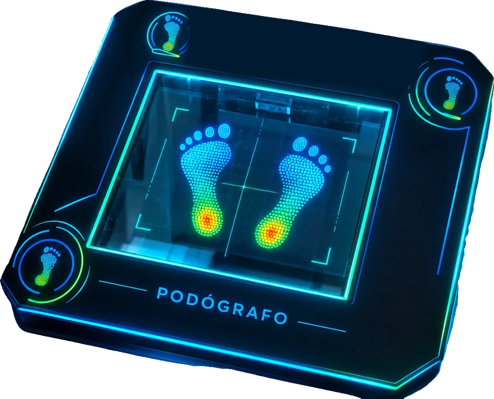
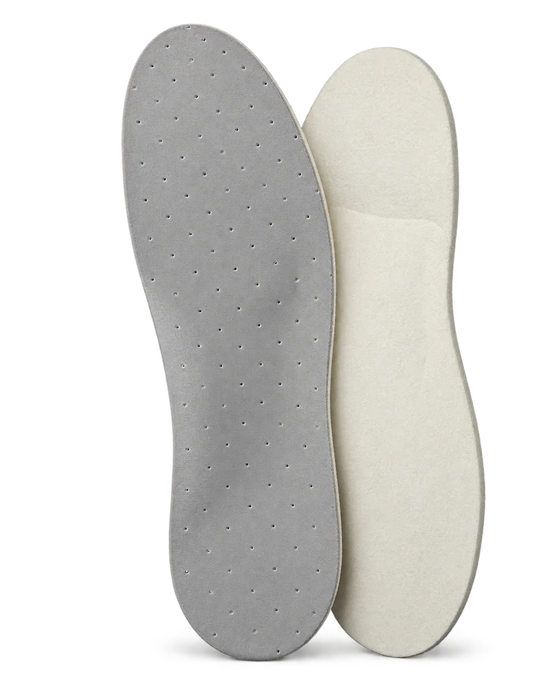
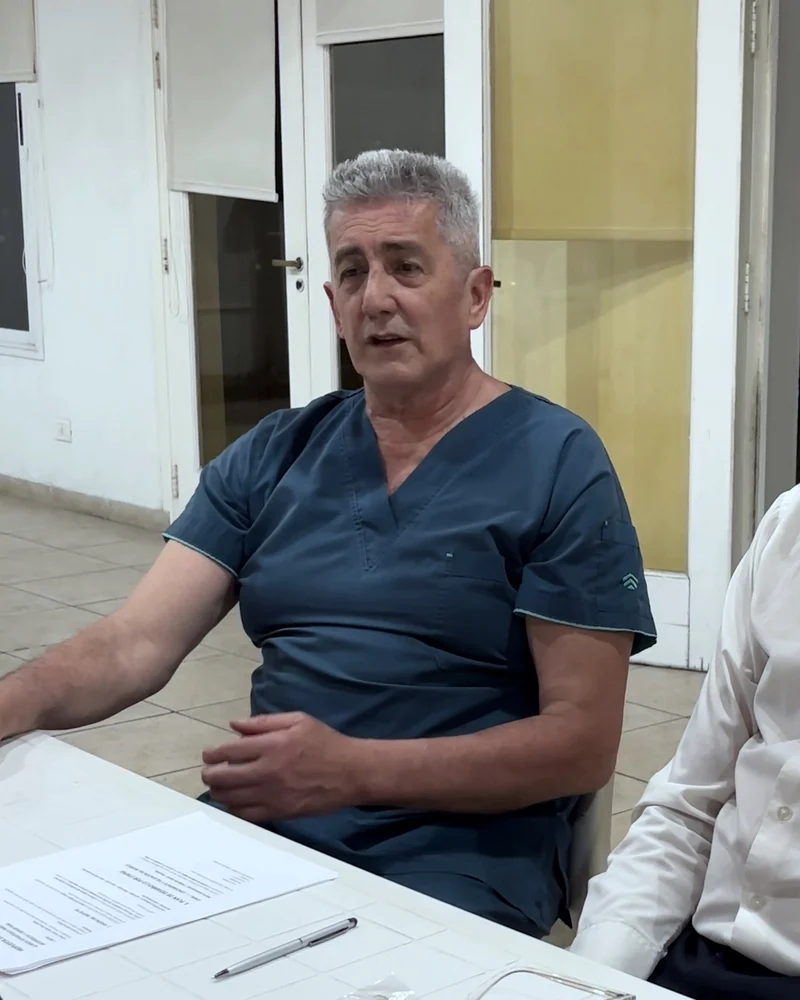

Estudio de la pisada con podógrafo digital.
Y tus plantillas Aligna a medida, en espuma Plastazote®.
Estudio + plantillas Aligna
desde $50.000
Consultorios en Haedo · Ituzaingó · Moreno

Cómo es
Tres pasos, y tenés tus plantillas.
- 1Pedís turnoPor WhatsApp, en el consultorio que te quede más cerca.
- 2Te hacés el estudioTe parás sobre el podógrafo y vemos en la pantalla cómo apoyás cada zona del pie.
- 3Te hacemos tus plantillasPlantillas Aligna fabricadas con tu estudio, en Plastazote®.

Plantillas a medida.
Cada plantilla Aligna se hace con el estudio de tu pisada. No es un talle de góndola: es la tuya.
Material: Plastazote®Estamos para asesorarte.
Dónde
Tres consultorios en el oeste.
Haedo
Ituzaingó
Moreno
Escribinos y te pasamos la dirección y los horarios del que te quede más cerca.

Respaldo médico
Con el criterio del Prof. Dr. Fabián Omar Zabala.
Especialista en ortopedia, traumatología y deportología.
¿Querés hacerte el estudio?
Escribinos y te damos turno. Estamos para asesorarte.
Escribinos por WhatsApp11 6638-4242